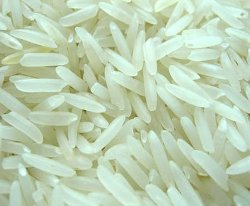
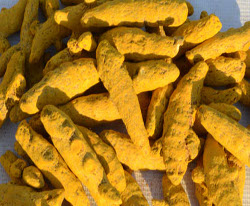
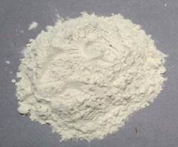
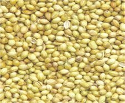

Agro Products

Basmati Rice
Basmati Rice is nature's exclusive gift to the Indian sub-continent. No other rice in the world has this know more...

Dessicated Coconut
Desiccated Coconut is a grated, dried (3% moisture content max.), and unsweetened fresh know more...

Dry Ginger
Dried ginger is nothing but fresh ginger which undergoes a drying process before being used. know more...

Turmeric Finger
Turmeric has been used in Tamilnadu for thousands of years and is a major part of Siddha medicine. know more...

Guar Gum Powder
India is native of guar or cluster bean where it is used as a vegetable. From hundreds of years Guar has been used as vegetable in India.more...

Coriander
Coriander is considered both an herb and a spice since both its leaves and its seeds are used as a seasoning condiment.more...